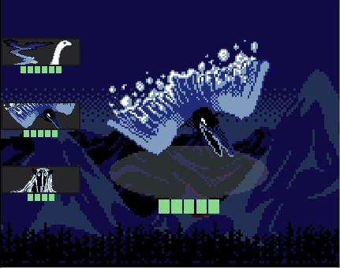

NEVER DONE GAMES is the studio name of Kaelan Doyle-Myerscough and Andrew Tran. We make strange games in vivid worlds. The kinds of games that have never been done before - and that you never feel done with.
Our first game, The Archipelago, is a tea-making narrative game about trauma and social change. The Archipelago is available on Steam, Android and itch.io.
 Our next project, Force Shifters, is a monster-battling multiplayer strategy game with an evolving narrative. Follow us somewhere for updates!
Kaelan Doyle-Myerscough (they/he) is our writer, narrative designer and artist. When they're not futzing with Ink or fretting over pixel-perfect lines, Kaelan enjoys knitting and sewing their own clothes.
Andrew Tran (he/him) is our software engineer and musician. Andrew dreams of making accessible engines and tools for game-making. Then he wakes up, waters his little forest of plants, and cooks delicious food.